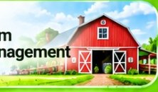
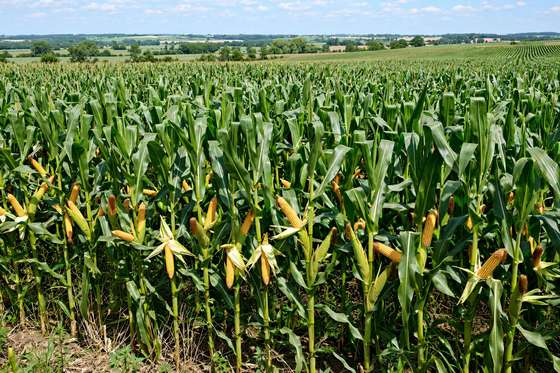
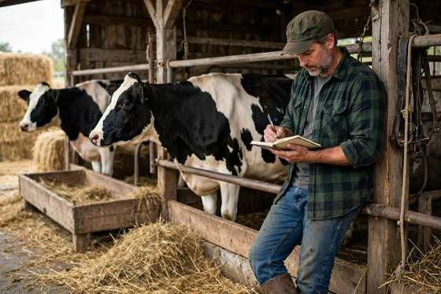
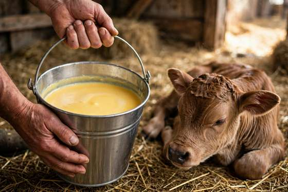

Housing & Ventilation
Good housing keeps animals comfortable in Pakistan's hot summers and cold winters. Cattle and buffalo need shade, a dry resting area, clean water nearby, and protection from rain and wind. Heat stress is one of the biggest hidden causes of low milk yield — a shaded, airy shed with fans or sprinklers in summer pays for itself in milk.
Ventilation removes heat, moisture and ammonia from the shed. Open-sided sheds with a high roof work well in most of Pakistan. Avoid closed, airless sheds: stale air spreads respiratory disease and stresses the animals.
Keep the floor dry and non-slippery, with enough space for every animal to lie down comfortably. Clean the shed and dung channels daily — a clean shed means fewer flies, fewer infections and healthier udders.
Feeding Management
Feed is the largest cost on a dairy farm and the biggest influence on milk yield. A balanced ration combines green fodder, dry fodder, concentrate (wanda), minerals and clean water. Animals should be fed according to their milk yield and stage of lactation — a high-yielding cow in early lactation needs far more energy than a dry cow.
Our step-by-step guides explain how to prepare balanced concentrate at home:
- Wanda Formulation Guide — how to make balanced concentrate feed for dairy animals.
- Commercial Dairy Wanda Guide — wanda feeding for commercial dairy herds.
- Silage Making & Feeding Guide — preserve green fodder as silage for the lean season.
For the full picture of animal nutrition, see Nutrition & Feeding. Whatever the ration, always provide clean drinking water at all times — a milking animal drinks a large amount of water every day, and a water shortage cuts milk yield within hours.

Breeding Records & Heat Detection
A cow that is not bred on time loses the farmer months of milk and a calf. Good breeding management starts with heat detection: watching for signs such as restlessness, mounting other animals, clear mucus discharge, reduced feed intake and a drop in milk.
Observe animals at least twice a day, morning and evening, when heat signs are easiest to spot. Record every heat, every insemination and every pregnancy check. The common rule for artificial insemination is to inseminate in the morning if heat was seen the previous evening, and in the evening if heat was seen that morning — your AI technician will confirm the timing.
Keep a breeding card for every animal: last calving date, heats observed, insemination dates, pregnancy diagnosis and expected calving date. Animals that fail to conceive after repeated inseminations need a veterinary examination — do not keep repeating inseminations blindly.

Hygiene & Biosecurity
- Clean milking equipment and the milker's hands before every milking; wash and dry teats to prevent mastitis.
- Quarantine newly purchased animals for at least two weeks before mixing them with the herd.
- Isolate sick animals immediately and call a veterinarian — early treatment saves animals and money.
- Control flies, ticks and rodents — they spread disease and stress the animals.
- Dispose of dead animals, afterbirth and waste safely, away from feed and water sources.
- Keep visitors, vehicles and outside animals away from the animal sheds where possible.
- Follow a regular vaccination and deworming programme — see our Vaccination & Prevention guide.
Record Keeping: Milk, Health & Breeding
Records turn guessing into management. A simple notebook is enough to start — the habit matters more than the format.
- Milk records: daily milk yield per animal, morning and evening. A sudden drop is often the first sign of illness or a feeding problem.
- Health records: vaccinations, deworming, treatments and illnesses, with dates and the medicine used. This helps your veterinarian treat the animal correctly and prevents repeating the same medicine unnecessarily.
- Breeding records: heats, inseminations, pregnancy checks and calving dates, as described above.
- Feed and cost records: what was bought, what it cost, and what the animals produced. Without costs, profit is only a guess.
Review the records weekly. They show which animals earn their keep, which need attention, and where the farm's money is really going.
Calf Care Basics
Today's calf is tomorrow's milking cow, so calf care deserves the same attention as the milking herd.
- Colostrum: every newborn calf must drink enough colostrum within the first hours of life — it is the calf's only protection against disease in the early weeks.
- Clean, dry housing: calves need a draught-free pen with dry bedding, away from adult animals and their dung.
- Milk feeding: feed milk at body temperature, at the same times each day, in clean buckets or bottles.
- Early starter feed: offer calf starter and clean water from the first weeks so the rumen develops properly.
- Vaccination and deworming: follow your veterinarian's calf schedule — see Vaccination & Prevention.
- Watch daily: a calf that refuses milk, has diarrhoea or looks dull needs attention the same day, not tomorrow.

📚 Farm Guides & Booklets
Free pictorial booklets and guides for running a better farm — modern dairy, fattening and livestock farming, plus herd health and calf care.
Modern Dairy Farming
Complete pictorial guide — housing, feeding, milking, breeding and farm records.
📖 View / Download PDFModern Fattening Farm
Calf fattening step by step — feeding, daily weight gain, health and marketing.
📖 View / Download PDFModern Livestock Farming
Farm layout, feeding, breeding, animal health and biogas — the complete picture.
📖 View / Download PDFGoat & Sheep Farming
32-page pictorial guide — breeds, feeding, breeding, 9 disease guides and Eid fattening.
📖 View / Download PDFSilage Making & Feeding Guide
Preserve green fodder as silage for the lean season — making, storing and feeding.
📖 View / Download PDFCattle Breeds of the World
All 25 breeds with photos, milk and meat figures and prices — plus the free 196-page guide.
📄 Explore the Breedsبچھڑوں کی پرورش — اردو رہنمائی
Complete calf care in simple Urdu — colostrum, milk feeding, weaning and housing.
📄 Open the Urdu GuideHerd Health — Disease & Treatment
All 36 disease guides: signs, treatment and prevention for a healthy herd.
📄 Browse the GuidesVaccination & Prevention
Herd vaccination schedules for cattle, buffalo, goats and sheep — plan the whole year.
📄 Open the GuideRelated Guides
Nutrition & Feeding · Wanda Formulation Guide · Commercial Dairy Wanda Guide · Silage Making & Feeding Guide · Vaccination & Prevention · Poultry · Cattle Diseases · Veterinary Library
⚠️ Important: Every farm is different — herd size, climate, fodder availability and market conditions all affect what works best. Use this guide as a starting point and adapt it with your veterinarian's advice for your own farm.
✍️ Written by Dr. Shahid Bilal Depal, DVM (PVMC RVMP #15068)
This guide is for educational purposes. Consult a registered veterinarian for diagnosis and treatment.